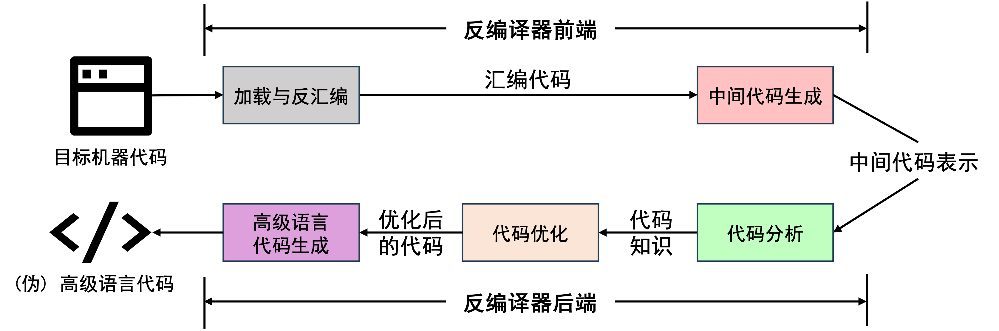
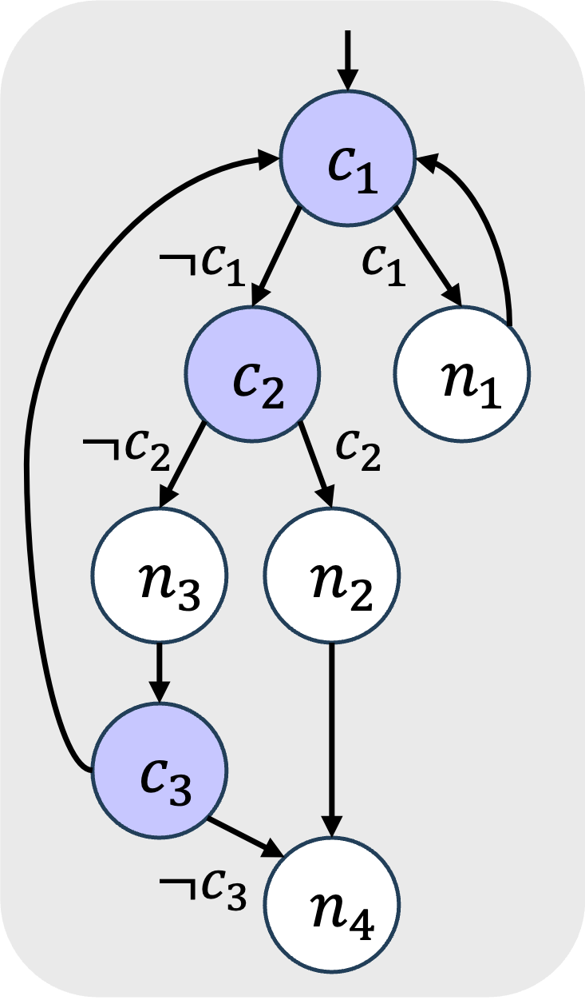
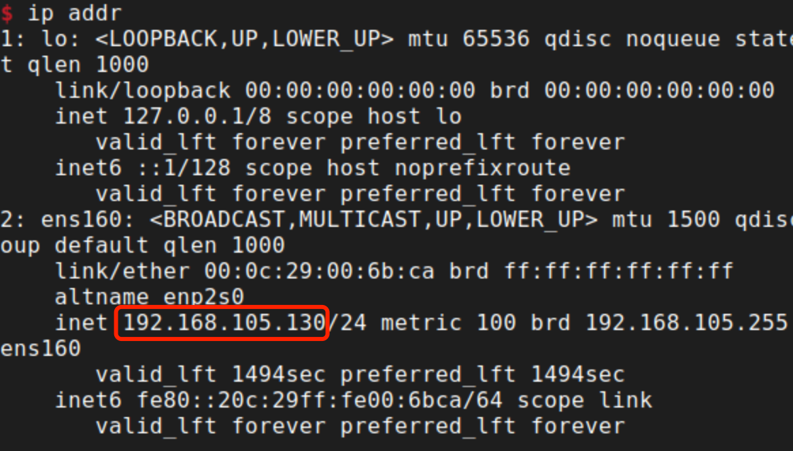
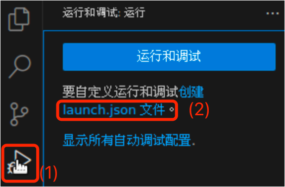
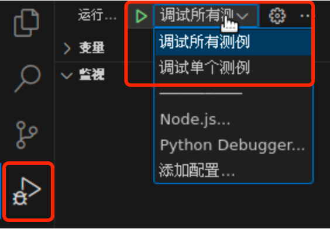
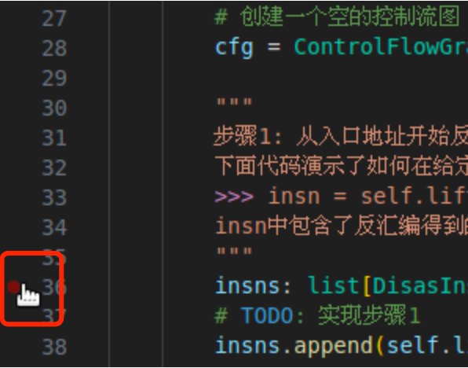
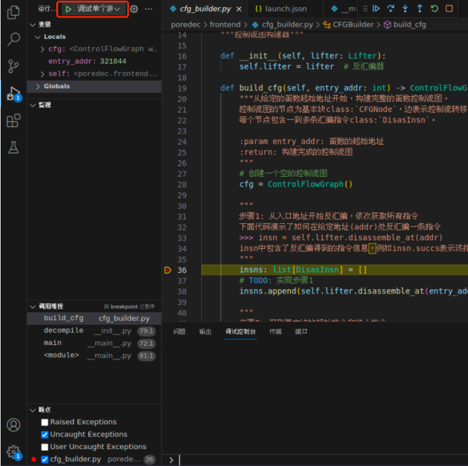
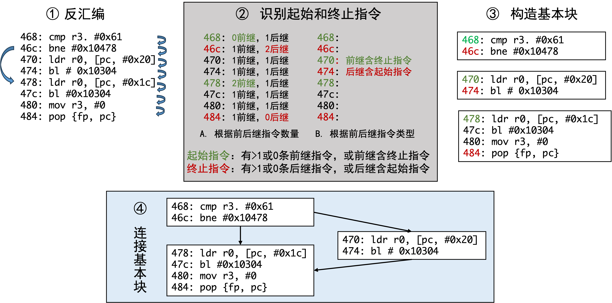

项目: 简易反编译器的实现
在本项目中你将基于PoREDec框架实现一个简易的反编译器。 通过项目实践，你能更深层次地理解课程中介绍的反编译原理，包括: 1. 反编译器如何构建控制流图 2. 反编译器如何如何通过分析控制流图，识别和生成高级语言中结构化代码，如``while``。
物料清单
以下是项目仓库的结构:
.
├── benchmarks # 测试样例
├── docs-html # 文档, 用网页浏览器打开index.html即可查看实验手册
├── Makefile # 用于运行测试用例
└── poredec # 反编译器源代码
其中需要特别注意的是 benchmarks 文件夹和 poredec 文件夹。
- poredec 文件夹: 包含了反编译器的所有源码文件，其中有两个源代码文件需要在本项目中实现
frontend/cfg_builder.py: 对应 任务1: 控制流图构建backend/structure_converter.py: 对应 任务2: 结构化代码生成
- benchmarks 文件夹: 包含了检验任务完成结果所需的物料，主要有三个部分
tasks.csv: 目标函数列表，需要在这些函数上完成控制流图生成和结构化代码生成任务
binaries: 目标二进制程序
- references: 两个任务的参考结果，用于 测试和缺陷分析
.png后缀的文件: 目标函数的控制流图生成参考结果
.c后缀的文件: 目标函数的结构化代码生成参考结果
docs-html 文件夹: 包含了本项目的文档，使用网页浏览器打开
index.html即可查看实验手册。Makefile: 用于运行测试用例的脚本，使用
make命令即可运行所有测试用例。
背景介绍
反编译器是一种将机器码转换为高级语言代码的工具。反编译前端负责将机器码转换为中间表示(IR)，后端负责将IR转换为高级语言代码。
{kind=link}

控制流图构建
反编译器前端的一个重要任务是构建控制流图 (CFG)，控制流图是一种图结构，它可以表示程序的控制流转移关系。 因此，构建控制流图对于代码分析优化和高级语言代码生成非常重要。
控制流图是一个有向图，其节点也称为基本块；其边表示程序执行的可能方向。因此构建控制流图有两个主要步骤: 识别基本块和连接基本块。
首先为了识别基本块，我们先来了解一下什么是基本块。 基本块是一组连续的指令，其中只有一个入口和一个出口。 入口称为基本块的起始指令，出口称为基本块的结束指令，基本块也可以只包含一条指令，该指令既是起始指令又是终止指令。 因此，识别基本块的关键是识别基本块的起始指令和终止指令。 具体来说，起始指令的特点是没有前继指令或前继指令中包含终止指令，终止指令的特点是没有后继指令或后继指令中包含起始指令。 通过分析指令的跳转关系，我们可以识别基本块的起始指令和终止指令，从而识别基本块。
在识别基本块之后，我们需要连接基本块。这一步仅需要将终止指令所在基本块与其后继指令所在基本块连接起来即可。
结构化代码生成
反编译器后端为了产生高级语言代码，需要从控制流图中恢复高级语言代码中的代码结构，包括循环、条件语句等。这一过程称为结构化代码生成。
结构化代码生成的关键在于实现化简规则，化简规则包括两方面能力： 一是从控制流图中识别高级语言代码中的结构， 二是通过化简将识别到的包含多个节点的控制流结构转换为简单的包含高级语言代码结构的节点。
由于不同的高级语言代码的结构会产生不同的控制流结构，因此结构化代码生成需要使用不同的化简规则。 根据规则的通用性，化简规则可以分为两类：针对性规则和通用规则。
针对性规则 是针对特定的高级语言代码结构设计的规则，如循环、条件语句等，其目的在于将控制流结构转化为不包含goto语句的高级语言代码结构。 之所以不产生goto是因为在许多高级语言编程场景中goto语句会降低代码的可读性。
通用规则 也称为goto规则，是可以确保控制流图完全化简——化简到只剩下一个节点的化简规则。引入通用规则是因为一些复杂的高级语言代码实现，如嵌套循环，会产生复杂的控制流图，无法被针对性规则完全化简。 具体来说通用规则将控制流图中的任意节点及其后继节点化简为含有goto的高级语言代码，而不会破坏代码语义。
{kind=link}

例如，上图所示的控制流图可以使用通用规则完全化简为以下代码：
𝐶_1: if (𝑐_1) goto 𝑁_1; else goto 𝐶_2;
𝑁_1: n_1; goto 𝐶_1;
𝐶_2: if (𝑐_2) goto 𝑁_1; else goto 𝑁_3;
𝑁_3: n_3; if (𝑐_3) goto 𝐶_1; else goto 𝑁_4;
𝑁_2: n_2;
𝑁_4: n_4;
PoREDec框架
PoREDec是一个基于Python的教学用反编译框架，它实现了基础的反编译功能组建。 在本项目中，我们将基于PoREDec框架实现反编译器的控制流图构建和结构化代码生成功能。
PoREDec反编译器概览 介绍了PoREDec框架的组成和工作流程。
准备工作
本部分介绍了项目所需的准备工作。
环境准备和测试
首先从git上拉取本次PJ的代码仓库。
接下来，我们来测试环境是否可用。
启用venv环境: 在虚拟机中打开终端，输入
source ~/l8_env/bin/activate输入完成后能够看到Prompt中显示(l8_env)字样，这说明venv环境已经启用。注意：后续测试时均需确保venv环境已提前启用，否则测试会报错。
{kind=link}

测试代码: 在虚拟机中进入之前拉取的代码仓库，输入
make命令，
VSCode安装
首先，我将介绍如何配置Visual Studio Code (VSCode)。
虚拟机中已经安装好了VSCode，可以直接使用。如果你想在宿主机本地环境中使用VSCode，可以参考以下步骤连接到虚拟机环境。
从 官网 下载并安装Visual Studio Code (VSCode)
安装远程开发扩展：打开VSCode，点击以下链接安装VSCode扩展
- 连接到虚拟机环境
确保虚拟机打开并运行，点击VSCode左下角的绿色按钮，选择
Remote-SSH: Connect to Host...或链接到主机在弹出的提示窗口输入
pore@<虚拟机IP>后按下回车连接。其中<虚拟机IP>在虚拟机终端中输入ip addr命令查询，如下图所示。在弹出的提示窗口中输入密码
pore连接到虚拟机环境。
查询虚拟机IP
在打开虚拟机中的VSCode，或远程连接到虚拟机环境后，你可以在VSCode中打开位于虚拟机中的项目文件夹 PoREDec ，并继续进行下面的步骤。
如果你远程连接到虚拟机环境，可能需要在虚拟机中安装 预览版 Python插件 vscode:extension/ms-python.python 。
VSCode Python解释器配置
为了方便后续实验，建议进一步配置Python环境。
首先打开任意.py结尾的文件，例如
poredec/__init__.py。点击右下角的Python版本选择器
在提示框中选择
输入解释器路径...输入
/home/pore/l8_env/bin/python
完成Python环境配置后输入 Ctrl+<键盘上Tab上方的按键> 打开终端，可以在Prompt上方看到 (l8_env) 字样，这表示Python环境已经切换成功。
这一步骤有两个用途: 1. 在代码编写时提供正确的代码引用; 2. 从VSCode启动终端会自动启用venv环境。
VSCode调试环境配置
调试可以帮助理解代码和分析代码异常，为了方便后续开发中的错误诊断，建议在VSCode中配置调试环境。以下是具体步骤:
创建launch.json文件: 在VSCode中点击左侧的调试按钮，点击
创建launch.json文件按钮，选择Python作为环境。
{kind=link}

填写调试配置
以下是调试配置文件的示例，其中包含了两个调试配置，分别用于调试所有测例和调试单个测例。
你可以将以下代码复制到上一步创建的 .vscode/launch.json 文件中，覆盖原有的内容。
{
"version": "0.2.0",
"configurations": [
{
"name": "调试所有测例",
"type": "debugpy",
"request": "launch",
"module": "poredec",
"console": "integratedTerminal",
"args": ["--tasks", "benchmarks/tasks.csv"],
"justMyCode": true
},
{
"name": "调试单个测例",
"type": "debugpy",
"request": "launch",
"module": "poredec",
"console": "integratedTerminal",
"args": [
"--binary", "benchmarks/binaries/httpd",
"--function", "0X4E934"
],
"justMyCode": true
},
]
}
选择调试配置: 由于我们创建了两个调试配置，因此在调试时需要选择要使用的调试配置。点击左侧的调试按钮，点击
选择要运行的配置按钮，选择调试所有测例或调试单个测例。
{kind=link}

添加代码断点: 在代码中添加断点，点击代码行号左侧的空白处，或者在代码行上右键点击
添加断点按钮。
{kind=link}

开始调试: 点static/vscode-debug-5.png击左侧的调试按钮，点击
开始调试按钮，或者直接按下F5键开始调试。
{kind=link}

更多调试方法请参考VSCode官方文档。
【可选】VSCode 图片查看扩展安装
后续实验中的部分输出以图片形式呈现，为了方便在VSCode中直接查看图片，建议在VSCode中安装Image Preview插件
任务1: 控制流图构建
根据代码模版，结合课上介绍的知识及代码注释，实现控制流图构建功能。控制流图中的基本块必须满足以下要求：同一处地址的指令不会同时出现在多个基本块中。
{kind=link}

控制流图构建示例
代码模版 poredec.frontend.cfg_builder 中包含了控制流图构建器的类定义，以及构建控制流图的主要步骤，请仔细阅读并实现。
1"""
2控制流图构建器
3"""
4# pylint: disable=pointless-string-statement
5# pylint: disable=unused-argument
6# pylint: disable=fixme
7
8from ..models.insn import DisasInsn
9from ..models.cfg import CFGNode, ControlFlowGraph
10from .lifter import Lifter
11
12
13__all__ = ["CFGBuilder"]
14
15
16class CFGBuilder:
17 """控制流图构建器"""
18
19 def __init__(self, lifter: Lifter):
20 self.lifter = lifter # 反汇编器
21
22 def build_cfg(self, entry_addr: int) -> ControlFlowGraph:
23 """从给定的函数起始地址开始，构建完整的函数控制流图。
24 控制流图的节点为基本块class:`CFGNode`，边表示控制流转移。
25 每个节点包含一到多条汇编指令class:`DisasInsn`。
26
27 :param entry_addr: 函数的起始地址
28 :return: 构建完成的控制流图
29 """
30 # 创建一个空的控制流图
31 cfg = ControlFlowGraph()
32
33 """
34 步骤1: 从入口地址开始反汇编，依次获取所有指令
35 下面代码演示了如何在给定地址(addr)处反汇编一条指令
36 >>> insn = self.lifter.disassemble_at(addr)
37 insn中包含了反汇编得到的指令信息，例如insn.succs表示该指令后继指令地址列表。更多信息见class:`DisasInsn`
38 """
39 insns: list[DisasInsn] = []
40 # TODO: 实现步骤1
41 insns.append(self.lifter.disassemble_at(entry_addr)) # 本行代码仅用于演示
42
43 """
44 步骤2: 识别基本块的起始指令和终止指令。
45 起始指令：有>1或0条前继指令，或前继指令中包含终止指令
46 终止指令：有>1或0条后继指令，或后继指令中包含起始指令
47 """
48 # TODO: 实现步骤2
49
50 """
51 步骤3: 构造基本块, 基本块包含从起始指令到下一条终止指令间的所有指令。
52 下面代码演示了如何创建一个基本块, node_insns为基本块中的所有指令
53 >>> node_addr = node_insns[0].address # 获取基本块的起始地址
54 >>> node = CFGNode(node_addr, node_insns) # 创建基本块
55 创建的基本块可以通过下面代码添加到控制流图中
56 >>> cfg.add_node(node)
57 """
58 # TODO: 实现步骤3
59 entry_node = CFGNode(entry_addr, insns)
60 cfg.add_node(entry_node) # 本行代码仅用于演示
61
62 """
63 步骤4: 根据控制流连接基本块
64 下面代码演示了如何添加控制流图的边
65 >>> cfg.add_edge(u, v) # 添加一条从u到v的边
66 >>> cfg.add_edge(u, v, label="T") # 可以指定边的标签，标签会在画图时显示
67 """
68 # TODO: 实现步骤4
69
70 """
71 步骤5: 设置控制流图的入口节点
72 """
73 # TODO: 实现步骤5: 只需要调用cfg.set_entry方法设置控制流图的入口节点
74 cfg.set_entry(entry_node) # 本行代码仅用于演示
75
76 assert cfg.nodes, "控制流图中没有节点"
77 assert cfg.entry, "需要设置控制流图的入口节点"
78 return cfg
任务2: 结构化代码生成
在这个任务中你需要基于模版 structure_converter 实现8条化简规则，包括2条通用规则和6条针对性规则。
模版中已经实现了化简控制流图的框架，包括 reduce_cfg() , reduce_node_by_goto() , reduce_node_by_rule() , completely_reduce_loop() 。
你需要在代码模版中实现其余方法，其中每一个方法代表一个具体的化简规则。
通用规则:
try_reduce_goto_sequence(): 化简后继数量为1的节点，产生goto语句try_reduce_goto_branch(): 化简后继数量为2的节点，化简为分支体为goto语句的if-else结构
针对性规则:
try_reduce_sequence(): 化简顺序结构try_reduce_while_true(): 化简为while(1)结构try_reduce_do_while(): 化简do-while结构try_reduce_if(): 化简if结构try_reduce_if_continue(): 化简if-continue结构try_reduce_if_else(): 化简if-else语句
建议先实现通用规则，确保通用规则能够完全化简控制流图，然后再实现针对性规则减少控制流图中的goto语句。
在实现化简规则时，你会使用 StructureConverterMixin 类中的四类方法。
- 获取控制流图节点的前继节点和后继节点
successors(): 获取后继节点列表predecessors(): 获取前驱节点列表
- 循环分析
get_loop_for(): 获取节点所在的循环信息is_loop_header(): 判断节点是否为循环头
- 生成伪高级语言代码语句
get_cond_expr(): 获取给定节点True Branch的条件表达式。可以通过logical_not()方法获取False Branch的条件表达式gen_goto_stmt(): 生成goto语句gen_if_stmt(): 生成if或if-else语句gen_while_stmt(): 生成while语句gen_do_while_stmt(): 生成do-while语句gen_continue_stmt(): 生成continue语句gen_break_stmt(): 生成break语句
- 化简节点
reduce_node(): 方法化简控制流图节点。
更多API详情见 StructureConverterMixin
1"""
2结构化代码生成器
3"""
4# pylint: disable=pointless-string-statement
5# pylint: disable=unused-argument
6# pylint: disable=fixme
7
8from ..models.cfg import CFGNode
9from ..models.expr import ConstExpr
10from .structure_converter_mixin import StructureConverterMixin, ReduceRule
11
12__all__ = ["StructureConverter"]
13
14
15class StructureConverter(StructureConverterMixin):
16
17 def reduce_cfg(self, node, by_rule, loop=None) -> bool:
18 """递归化简控制流图，尝试将多个节点化简为一个节点。
19
20 函数会使用广度优先搜索遍历控制流图中从给定节点可达的所有节点，并在尝试化简这些节点——将节点与其后继节点合并。
21
22 :param node: 待化简的节点
23 :param by_rule: 为True时使用针对性规则化简，否则使用通用(goto)规则
24 :param loop: 当给定loop时，只化简循环内的节点，否则化简所有node可达的节点。
25 :return: 如果节点被化简为结构化语句，则返回True
26 """
27 if by_rule:
28 reduce_node_func = self.reduce_node_by_rule
29 else:
30 reduce_node_func = self.reduce_node_by_goto
31
32 if loop:
33 return self.bfs_traverse_loop(node, reduce_node_func, loop)
34 else:
35 return self.bfs_traverse(node, reduce_node_func)
36
37 def reduce_node_by_goto(self, node: CFGNode) -> bool:
38 """使用goto规则化简控制流图节点。
39
40 goto化简规则由`try_reduce_goto_`开头的函数实现。这些规则化简函数与
41 :meth:`reduce_node_by_rule` 调用的规则化简函数类似；
42 区别在于这些规则化函数只使用goto语句化简节点，并且一定能完成化简，并返回True。
43 因此通常情况下，方法一定会返回True，否则说明实现的goto规则不完整。
44
45 具体来说::
46
47 识别如下结构
48 node {stmt1}
49 └── succ {stmt2}
50 将其化简为
51 node {stmt1; goto stmt2;}
52
53 :param node: 待化简的控制流图节点
54 :return: 如果节点被化简，则返回True。注意：函数返回False说明函数实现不完整
55 """
56 if not self.successors(node):
57 return False
58
59 if self.try_reduce_goto_sequence(node):
60 self.emit_reduce_event(ReduceRule.GOTO_SEQUENCE, node)
61 return True
62 if self.try_reduce_goto_branch(node):
63 self.emit_reduce_event(ReduceRule.GOTO_BRANCH, node)
64 return True
65 if self.try_reduce_goto_switch(node):
66 self.emit_reduce_event(ReduceRule.GOTO_SWITCH, node)
67 return True
68
69 self.log.warning(
70 f"goto规则不全面无法化简节点: {node.address:#X}，"
71 f"该节点有{len(self.successors(node))}个后继节点"
72 )
73 return False
74
75 def reduce_node_by_rule(self, node: CFGNode) -> bool:
76 """检查给定的控制流图节点是否满足化简条件，如果可以则将其化简为结构化语句。
77
78 函数的实现逻辑是：首先检查节点是否为循环头，如果是则尝试化简循环；否则尝试使用其他规则化简节点。
79 每个规则化简函数名以`try_reduce_`开头，例如`try_reduce_sequence`。
80 每个规则化简函数需要完成两方面操作：
81 1. 判断节点是否满足化简条件，如果不满足则返回False。
82 2. 如果满足则将节点化简为结构化语句，并返回True。
83 当任意节点被化简时，函数会调用`emit_reduce_event`方法记录化简事件，并返回True。
84
85 :param node: 待检查的控制流图节点
86 :return: 如果节点被化简为结构化语句，则返回True，否则返回False
87 """
88 if self.is_loop_header(node) and not self.is_loop_header_under_analysis(node):
89 self.enter_loop(node)
90 self.completely_reduce_loop(node)
91 self.leave_loop()
92 return True
93
94 if self.try_reduce_sequence(node):
95 self.emit_reduce_event(ReduceRule.SEQUENCE, node)
96 return True
97
98 if self.try_reduce_while_true(node):
99 self.emit_reduce_event(ReduceRule.WHILE_TRUE, node)
100 return True
101
102 if self.try_reduce_do_while(node):
103 self.emit_reduce_event(ReduceRule.DO_WHILE, node)
104 return True
105
106 if self.try_reduce_if_else(node):
107 self.emit_reduce_event(ReduceRule.IF_ELSE, node)
108 return True
109
110 if self.try_reduce_if(node, True) or self.try_reduce_if(node, False):
111 self.emit_reduce_event(ReduceRule.IF, node)
112 return True
113
114 if self.try_reduce_if_continue(node, True) or self.try_reduce_if_continue(
115 node, False
116 ):
117 self.emit_reduce_event(ReduceRule.IF_CONTINUE, node)
118 return True
119
120 return False
121
122 def completely_reduce_loop(self, node: CFGNode):
123 """完全化简以节点为循环头的循环，将循环内的节点化简为结构化语句。
124
125 该方法首先尝试使用针对性规则化简循环；如果无法化简则使用goto规则将循环内的后继节点与节点合并，
126 直到循环内只剩一个节点，从而可以将该节点转化为while(1)循环。
127
128 注意：如果循环没有被化简，大概率是通用(goto)规则实现不完整。
129
130 :param node: 循环头部节点
131 """
132 loop = self.get_loop_for(node)
133
134 while not self.is_loop_reduced(loop) and self.reduce_cfg(node, by_rule=True):
135 pass
136
137 if not self.is_loop_reduced(loop):
138 self.reduce_cfg(node, by_rule=False, loop=loop)
139 self.cfg.add_edge(node, node)
140 if self.try_reduce_while_true(node):
141 self.emit_reduce_event(ReduceRule.WHILE_TRUE, node)
142
143 # 以下是具体的控制流图结构识别和化简方法，其中有一部分方法未实现，请根据文档要求实现这些方法
144
145 def try_reduce_goto_sequence(self, node: CFGNode) -> bool:
146 """使用goto规则化简顺序结构。对于给定的节点，如果只有一个后继节点，则在给定节点后面添加goto语句，并删除后继节点。
147
148 具体来说::
149
150 识别如下结构
151 node {stmt1}
152 └── succ {stmt2}
153 将其化简为
154 node {stmt1; goto stmt2;}
155
156 :param node: 待化简的控制流图节点
157 :return: 如果节点被化简为结构化语句，则返回True，否则返回False
158 """
159 # TODO: 实现该方法
160 return False
161
162 def try_reduce_goto_branch(self, node: CFGNode) -> bool:
163 """使用goto规则化简if-else结构。对于给定的节点，如果有两个后继节点，则在节点后面添加if-goto-else-goto语句，并删除后继节点。
164
165 具体来说::
166
167 识别如下结构
168 node {stmt1}
169 ├── succ1 {stmt2}
170 └── succ2 {stmt3}
171 将其化简为
172 node {stmt1; if(cond) goto stmt2; else goto stmt3;}
173
174 :param node: 待化简的控制流图节点
175 :return: 如果节点被化简为结构化语句，则返回True，否则返回False
176 """
177 # TODO: 实现该方法
178 return False
179
180 def try_reduce_goto_switch(self, node: CFGNode) -> bool:
181 """使用goto规则化简switch结构。不要求实现"""
182 return False
183
184 def try_reduce_while_true(self, node: CFGNode) -> bool:
185 """尝试将给定的节点化简为while(1)语句，避免使用goto
186
187 具体来说::
188
189 识别如下自循环结构
190 node {stmt}
191 └── node (自循环)
192 将其化简为
193 node {while(1) {stmt}}
194
195 :param node: 待化简的控制流图节点
196 :return: 如果节点被化简为结构化语句，则返回True，否则返回False
197 """
198 # TODO: 实现该方法
199 return False
200
201 def try_reduce_do_while(self, node: CFGNode) -> bool:
202 """尝试将给定的节点化简为do-while语句，避免使用goto
203
204 具体来说::
205
206 识别如下结构
207 node {stmt}
208 ├── node (自循环)
209 └── succ (循环后继节点)
210 将其化简为
211 node {do {stmt} while (1)}
212 └── succ
213
214 :param node: 待化简的控制流图节点
215 :return: 如果节点被化简为结构化语句，则返回True，否则返回False
216 """
217 # TODO: 实现该方法
218 return False
219
220 def try_reduce_sequence(self, node: CFGNode) -> bool:
221 """尝试将简单顺序结构化简为单个节点，避免使用goto
222
223 具体来说::
224
225 识别如下结构
226 node {stmt1}
227 └── succ {stmt2} (succ != node，即不是自循环)
228 ...
229 └── succ_succ_N (N >= 0)
230 将其化简为
231 node {stmt1; stmt2}
232 ...
233 └── succ_succ_N (N >= 0)
234
235 :param node: 待化简的控制流图节点
236 :return: 如果节点被化简为结构化语句，则返回True，否则返回False
237 """
238 # TODO: 实现该方法
239 return False
240
241 def try_reduce_if(self, node: CFGNode, true_branch: bool) -> bool:
242 """尝试将给定的节点化简为if结构，避免使用goto。
243 当branch为True时，将node的第一个后继视为if_node，否则将另一个后继视为if_node
244
245 具体来说::
246
247 识别如下结构：
248 node {stmt}
249 ├── if_node {stmt1}
250 | └── if_succ
251 └── if_succ
252 将其化简为
253 node {stmt; if(cond) {stmt1}}
254 └── if_succ
255
256 :param node: 待化简的控制流图节点
257 :param true_branch: 尝试化简为if结构的分支方向，为True时if语句的条件为`cond = get_cond_expr(node)`，
258 否则条件为`cond = cond.logical_not()`
259 :return: 如果节点被化简为结构化语句，则返回True，否则返回False
260 """
261 # TODO: 实现该方法
262 return False
263
264 def try_reduce_if_continue(self, node: CFGNode, true_branch: bool) -> bool:
265 """尝试将给定的节点化简为if-continue结构，避免使用goto
266
267 具体来说::
268
269 识别如下CFG结构
270 node {stmt}
271 ├── if_node
272 | └── node (跳转到循环头)
273 └── if_succ
274 将其化简为
275 node {stmt; if(cond) continue;}
276 └── if_succ
277
278 :param node: 待化简的控制流图节点
279 :param true_branch: 尝试化简为if-continue结构的分支方向，为True时if语句的条件为`cond = get_cond_expr(node)`，
280 否则条件为`cond = cond.logical_not()`
281 :return: 如果节点被化简为结构化语句，则返回True，否则返回False
282 """
283 # TODO: 实现该方法
284 return False
285
286 def try_reduce_if_break(self, node: CFGNode, true_branch: bool) -> bool:
287 """尝试将给定的节点化简为if-break结构，避免使用goto
288
289 具体来说::
290
291 识别如下CFG结构
292 node {stmt}
293 ├── if_node
294 | └── exit (跳转到内层循环出口)
295 └── if_succ
296 将其化简为
297 node {stmt; if(cond) break;}
298 └── if_succ
299
300 :param node: 待化简的控制流图节点
301 :param true_branch: 尝试化简为if-break结构的分支方向，为True时if语句的条件为`cond = get_cond_expr(node)`，
302 否则条件为`cond = cond.logical_not()`
303 :return: 如果节点被化简为结构化语句，则返回True，否则返回False
304 """
305 loop = self.get_loop_for(node)
306 if not loop:
307 return False
308
309 succs: list[CFGNode] = self.successors(node)
310 if len(succs) != 2:
311 return False
312
313 if_node = succs[0] if true_branch else succs[1]
314 if_succ = succs[1] if true_branch else succs[0]
315
316 if not self.is_loop_succ(if_node, loop):
317 return False
318
319 cond = self.get_cond_expr(node)
320 if not true_branch:
321 cond = cond.logical_not()
322
323 break_stmt = self.gen_break_stmt(loop.header)
324 if_stmt = self.gen_if_stmt(cond, [break_stmt], None)
325 self.reduce_node(node, [if_stmt], [if_succ], True)
326 return True
327
328 def try_reduce_if_else(self, node: CFGNode) -> bool:
329 """尝试将给定的节点化简为if-else结构，避免使用goto
330
331 具体来说::
332
333 识别如下CFG结构
334 node {stmt}
335 ├── if_node {stmt1}
336 | └── if_succ
337 └── else_node {stmt2}
338 └── else_succ (if_succ == else_succ)
339 将其化简为
340 node {stmt; if(cond) {stmt1} else {stmt2};}
341 └── if_succ
342
343 :param node: 待化简的控制流图节点
344 :return: 如果节点被化简为结构化语句，则返回True，否则返回False
345 """
346 # TODO: 实现该方法
347 return False
测试和缺陷分析
在完成代码编写后，你需要对代码进行测试，以确保代码的正确性，并且诊断代码中存在的问题。
在本项目中，我们提供了一些测试样例和参考结果，你可以使用这些测试样例来验证你的代码是否正确。
测试样例位于 benchmarks 目录下，包含了20个测试样例。参考目录 benchmarks/references 下包含了任务一和任务二的参考结果。
下面会分别介绍在任务一和任务二中如何测试和分析诊断代码缺陷。
任务一测试和缺陷分析
在 PoREDec 目录运行 make cfg 或者 python -m poredec --tasks benchmarks/tasks.csv --only-cfg 命令。
该命令会用你编写的控制流图构建器分析在所有的测试样例，如果代码中存在问题，会在控制台输出错误信息，你可以根据错误信息诊断代码问题。
运行结果会保存在 outputs 输出目录下，每一个测试样例对应输出目录下的一个目录，该目录中包含以下内容
cfg-disassemble.png: 控制流图
cfg-pcode.png: 使用Pcode表示的控制流图 (可读性较差，不建议使用这个文件进行诊断)
为了判断控制流图是否正确，你可以将 cfg-disassemble.png 文件与 benchmarks/references 参考目录下对应的 .png 图片进行对比。
若两者结构一致，则说明控制流图构建正确，否则控制流图不满足要求。注意，与参考图片相比，可能存在一些细节上的差异，例如节点的顺序，在图的结构一致的情况下，这些都不影响控制流图的正确性。
任务二测试和缺陷分析
在 PoREDec 目录运行 make 或者 python -m poredec --tasks benchmarks/tasks.csv 或者 命令。
如果代码中存在问题，会在控制台输出错误信息，你可以根据错误信息诊断代码问题。
输出的结构化代码同样会保存在 outputs 目录下对应测试样例目录中，结构化代码生成涉及的文件有以下几类:
decompiled.c: 结构化代码生成结果
decompiled_simplified.c: 精简后的结构化代码生成结果，删除了代码块中的语句，更容易看出代码的高级语言结构（建议先分析该文件是否生成正确）
cfg-structured.png: 控制流图化简结果
cfg-structured-disassemble.png: 使用汇编代码而非Pcode表示的结构化代码生成结果，代码长度更短一些，但是代码语义容易存在错误
debug-structure目录中的.png文件: 化简过程中的中间结果，例如
2-REDUCE#IF_ELSE@0x1066C.png表示第二次化简事件使用了IF_ELSE规则化简了从0x1066C开始的控制流图节点，产生的控制流图保存在该文件中。decompile.log: 化简过程中的日志，包含了化简规则的使用情况，节点删除情况等。每次运行的结果会追加到该文件中。如果要重新记录日志，可以删除该文件。
参考结果目录 benchmarks/references 中包含以下参考结果:
TASK.c:
decompiled.c的标准答案版本。TASK.simplified.c:
decompiled_simplified.c的标准答案版本。TASK.ghidra.c: 由Ghidra反编译器生成的反编译代码，你生成的代码与该代码差异很大是正常现象。该文件仅用于理解PoREDec反编译器由于缺少了代码优化，与现代反编译器间仍存在巨大差异。
你可以通过以下步骤逐步分析结构化代码生成过程中的错误
对比
outputs目录下的decompiled_simplified.c与benchmarks/references目录下对应的TASK.simplified.c。若两者控制流语义存在差异，则说明生成的结构化代码生成可能存在错误。注意，有的时候两者代码不同，但是语义相同，这种情况下结构化代码生成结果也是正确的。若上一步中发现存在错误，分析
debug-structure中每一个化简步骤产生的中间结果，诊断是哪一个步骤出现了问题确定哪一个步骤出现问题后，结合调试分析缺陷，并修改代码重新测试
评分标准
- 任务一
代码: 15分
报告: 35分
- 任务二
代码: 15分
报告: 35分
- 代码要求
不抄袭，不使用AI，否则将会被取消成绩。我们会做代码语义查重 (使用AI产生的相似代码也会被检测到)。
代码能够在测试样例上正确运行，产生符合预期的反编译效果。
将poredec源代码目录压缩后提交到elearning上, 提交的代码中只能修改poredec/frontend/cfg_builder.py和poredec/backend/structure_converter.py。其它代码修改可能会导致代码被判别为无法运行。
- 报告要求
基本要求：逻辑清晰，步骤完整，符合报告模版规范
得分点一：结合代码，解释背后的原理
- 得分点二：结合实验结果，说明代码的有效性
若无法达成预期效果，需要详细描述问题分析过程，并阐明改进想法
得分点三：阐述心得体会
报告模板
以下是Markdown格式的解题报告，最终报告需提交PDF版本。
# Project2 项目报告
* 姓名: 小张
* 学号: xxx
## 1. 任务一: 控制流图构建
### 1.1 实现思路
在这一部分**概括地**介绍你实现控制流图构建算法的思路和方法。
### 1.2 代码实现
在这一部分**展开**介绍控制流图构建的代码实现。结合代码和代码注释加以说明你是如何实现控制流图构建算法的。
在实现过程中，你可能会遇到一些问题，或者有一些想法，这些都可以在这一部分中进行描述。
### 1.3 结果分析
选择一个以base64或httpd开头的测试用例，结合图片、代码说明你的算法如何将汇编代码转换为控制流图的。
在分析结果时，附上必要的图片和代码片段。
## 2. 任务二: 结构化代码生成
### 2.1 实现思路
在这一部分**概括地**介绍你实现结构化代码生成算法的思路和方法。
### 2.1 代码实现
在这一部分**展开**介绍结构化代码生成的代码实现。结合代码和代码注释加以说明你是如何实现结构化代码生成算法的。
在实现过程中，你可能会遇到一些问题，或者有一些想法，这些都可以在这一部分中进行描述。
### 2.3 结果分析
对于每一种化简规则，分别选择一个测试用例，结合图片、代码说明你的算法如何实现结构化。
## 总结
在这一部分**总结**你在本项目中的收获和心得体会。